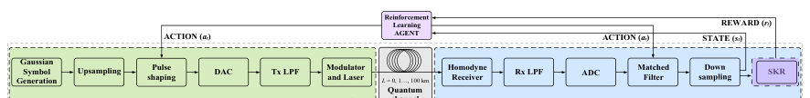
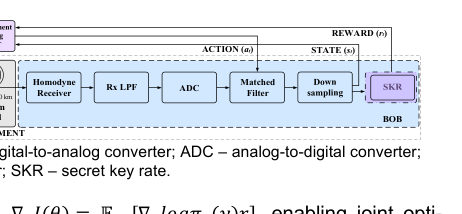
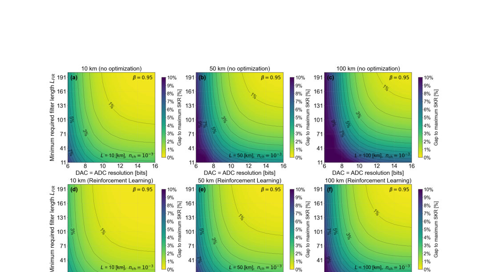
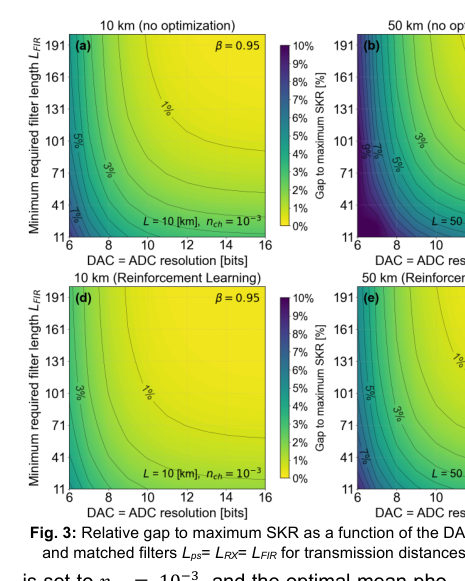

← Index · ← Previous · Next →
Authors: Svitlana Matsenko, Amirhossein Ghazisaeidi, Marcin Jarzyna, Konrad Banaszek, Darko Zibar
Type: theory · Category: quantum information and computing · PDF: https://arxiv.org/pdf/2605.02045v1
Analysis basis: full PDF text, analyzed in chunks




Summary. This paper uses reinforcement learning to optimize the hardware parameters of a CV-QKD system. By jointly tuning filters and signal intensity, the researchers achieved much higher key rates and longer transmission distances despite realistic hardware limitations like low-resolution converters.
Why it may be interesting. not directly relevant
Main problem. Optimizing the performance of Continuous-Variable Quantum Key Distribution (CV-QKD) under practical hardware constraints such as finite filter lengths, limited DAC/ADC resolution, and inter-symbol interference.
Main result. The joint optimization of transmitter/receiver filters and mean photon number significantly improves the Secure Key Rate (SKR) and extends the maximum transmission distance from 60 km to nearly 100 km.
Method. An end-to-end reinforcement learning approach using the REINCOFFE policy gradient algorithm to update filter weights and photon number without requiring gradient computation.
Model / system. A CV-QKD system over optical fiber networks using Gaussian-modulated symbols, coherent detection, and standard telecommunication components including DAC/ADC and FIR filters.
Key observables. Secure Key Rate (SKR)
Important parameters / regimes. Filter lengths (L_TX, L_RX), DAC/ADC bit resolution (b), transmission distance (L), channel excess noise (n_ch), and mean photon number (n*)
Assumptions / limitations. Quantization errors from DAC and ADC are modeled as equivalent Gaussian additive noise terms.
Figures summary. Fig 1 shows the system architecture; Fig 2 shows SKR vs resolution and filter amplitude response; Fig 3 shows the gap to maximum SKR relative to hardware resolution and filter length; Fig 4 shows SKR vs distance for different noise levels.
Paper structure. The paper introduces the hardware constraints in CV-QKD, describes the reinforcement learning optimization framework, presents results regarding performance gains and distance extension, and analyzes the efficiency of hardware requirements.
Using reinforcement learning, we optimize for practical hardware constraints, including limited FIR filter taps at the transmitter and receiver, mean photon number and finite DAC/ADC resolution. Under these realistic conditions, the proposed approach achieves significant performance improvements.
Authors: Koushik Bhakta, Bikash Bhattacharjya, Xiwang Cao
Type: theory · Category: quantum information and computing · PDF: https://arxiv.org/pdf/2605.02254v1
Analysis basis: full PDF text, analyzed in chunks
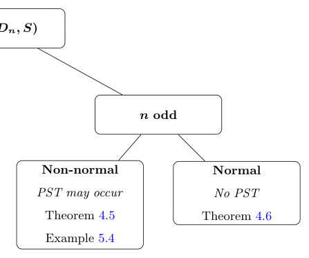
Summary. This paper provides a complete mathematical classification of when perfect state transfer can occur in Grover walks on dihedral Cayley graphs. By moving beyond abelian groups to the non-abelian dihedral group, it identifies specific graph structures that allow for high-fidelity state transport, which is a fundamental requirement for quantum information processing.
Why it may be interesting. not directly relevant
Main problem. The paper seeks to provide a complete characterization of the conditions required for Perfect State Transfer (PST) in Grover walks on Cayley graphs over the non-abelian dihedral group D_n.
Main result. The authors establish necessary and sufficient conditions for PST in both normal and non-normal Cayley graphs, proving that PST cannot occur in normal Cayley graphs when n is odd and constructing infinite families of graphs that do exhibit PST.
Method. The study employs the representation theory of the dihedral group, spectral analysis of the transition matrix, and Fourier analysis on finite groups, utilizing Chebyshev polynomials to evaluate the dynamics.
Model / system. The model is a discrete-time Grover walk on Cayley graphs of the dihedral group D_n, where the evolution is governed by a transition matrix derived from the graph's adjacency structure.
Key observables. Perfect State Transfer (PST) between specific vertices and the periodicity of the quantum walk.
Important parameters / regimes. The parity of n, the normality of the connection set S (whether it is a union of conjugacy classes), and the degree of the graph.
Assumptions / limitations. The graphs are assumed to be finite, simple, and symmetric (S = S^-1), and the study is specifically focused on the Grover walk model.
Figures summary. Figure 1 provides a classification flowchart or matrix summarizing the existence of PST based on the normality of the graph and the parity of n.
Paper structure. The paper begins with an introduction to Grover walks and Cayley graphs, followed by the application of representation theory to compute eigenvalues and eigenvectors, then proceeds to a case-by-case analysis of PST conditions for even and odd n, and concludes with specific examples and open questions.
The paper investigates perfect state transfer (PST) in Grover walks on Cayley graphs over the dihedral group $D_n$. The Grover walk is a discrete-time quantum walk widely studied in quantum information processing. A Cayley graph $\operatorname{Cay}(Γ,S)$ is called normal if $S$ is the union of some conjugacy classes of the group $Γ$; otherwise, it is called non-normal. Most existing studies have been restricted to Cayley graphs over abelian groups. In contrast, we investigate both normal and non-normal cases for Cayley graphs over the non-abelian group $D_n$. By examining the parity of $n$ and the normality of the Cayley graph, we obtain a complete characterization of PST on $\operatorname{Cay}(D_n,S)$. In particular, we establish necessary and sufficient conditions for the occurrence of PST in all possible cases, and prove that PST does not occur for normal Cayley graphs when $n$ is odd. Furthermore, we construct several infinite families of normal and non-normal Cayley graphs $\operatorname{Cay}(D_n,S)$ that exhibit PST, illustrating the application of the main result. Our approach is based on the representation theory of the dihedral group.
Authors: Joost Van Veen, Luise Prielinger, Sebastian Feld
Type: theory · Category: quantum information and computing · PDF: https://arxiv.org/pdf/2605.02389v1
Analysis basis: full PDF text, analyzed in chunks
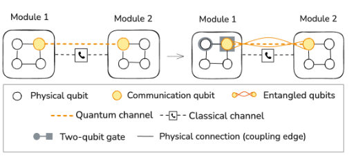
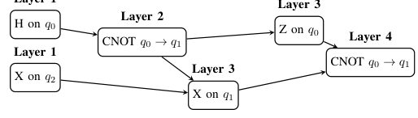

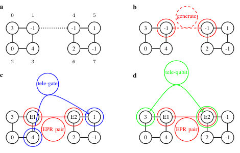
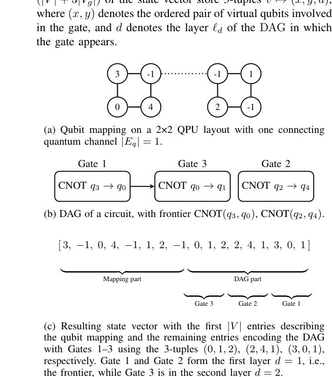
Summary. This paper presents an improved reinforcement learning framework for compiling quantum circuits in distributed architectures. By re-engineering the RL action space to use routing chains rather than single edges, the authors significantly speed up both the training process and the resulting circuit execution time. This is a crucial step toward managing the complexity of scaling quantum computers via modular interconnects.
Why it may be interesting. not directly relevant
Main problem. Optimizing quantum circuit routing and compilation in distributed quantum computing (DQC) architectures to minimize total execution time.
Main result. The proposed RL agent using action-space engineering achieves up to a 35% reduction in modeled execution time and a 64% reduction in training wall-clock time compared to existing baselines.
Method. A Reinforcement Learning approach using Deep Q-Networks (DQN) with a novel action-space formulation (routing via precomputed shortest paths), action-masking strategies, and a low-dimensional Q-value approximation.
Model / system. A distributed quantum computing architecture consisting of multiple interconnected modules (QPUs) with local intra-module connectivity and remote inter-module links for EPR pair generation and tele-operations.
Key observables. Total circuit execution time (measured in timesteps), cumulative reward, and training wall-clock time.
Important parameters / regimes. Entanglement generation probability (p_gen = 0.95), gate execution latencies (SWAP vs. remote operations), and circuit size (number of CNOT gates).
Assumptions / limitations. The model assumes classical channels are available for heralding, neglects single-qubit gate routing, and approximates stochastic entanglement generation as a deterministic process with fixed latency.
Figures summary. Figure 1 shows remote entanglement generation; Figure 2 depicts a circuit DAG; Figure 3 visualizes qubit mapping and remote actions (tele-qubit, tele-gate); Figure 4 shows state vector encoding; Figures 5-6 show hardware topologies; Figures 11-12 show execution time distributions via boxplots.
Paper structure. The paper introduces the DQC challenge, describes the hardware and circuit models, details the RL agent's novel action-space and masking innovations, presents numerical comparisons against a baseline, and discusses scalability and training dynamics.
As it becomes increasingly difficult to monolithically scale a quantum processor, distributed quantum computing (DQC) offers an alternative by distributing qubits across multiple smaller interconnected quantum processor modules. In such an architecture, the challenge of quantum circuit compilation shifts from placing and routing qubits within one module to placing, routing and using the qubits efficiently across modules. In order to optimize circuit execution time, the right state-dependent networking decisions must be found, such as when and where to generate shared remote quantum states to support remote operations. Reinforcement learning (RL) provides a natural framework for this problem, generating a compilation policy that can generalize across different circuits. Building on the framework of Promponas et al. (2024), we introduce an agent that combines a novel action-space formulation with effective action-masking strategies. A comprehensive numerical comparison of the two approaches under different coupling constraints shows that our agent achieves improved training and inference performance with a relative reduction in the modeled execution time of up to 35\%.
Authors: Trevor Thomas, Walter O. Krawec, Bing Wang
Type: theory · Category: quantum information and computing · PDF: https://arxiv.org/pdf/2605.02588v1
Analysis basis: abstract only; PDF text extraction failed or PDF unavailable
Summary. This paper presents a new protocol called S-CAD for Quantum Conference Key Agreement that allows users to selectively use classical advantage distillation. It provides a new security proof against coherent attacks that is more efficient than previous work and demonstrates through simulations when the protocol is most effective.
Why it may be interesting. not directly relevant
Main problem. Determining the optimal use of Classical Advantage Distillation (CAD) in Quantum Conference Key Agreement (QCKA) and establishing whether previous performance bounds were asymptotically tight.
Main result. The authors introduce S-CAD, a new protocol that allows for selective activation of CAD, and provide an asymptotic proof of security against general coherent attacks that outperforms previous methods.
Method. The authors design a new protocol (S-CAD) that generalizes existing QCKA+CAD methods and use asymptotic security proofs and simulations of star network topologies to evaluate performance.
Model / system. The protocol utilizes GHZ states to establish shared group keys among multiple parties in a star network topology.
Key observables. Secret key rate and security against coherent attacks.
Important parameters / regimes. The decision to enable or disable CAD and the network topology (star network).
Assumptions / limitations. The security proof is derived against general coherent attacks.
Paper structure. The paper introduces the S-CAD protocol, provides an asymptotic security proof, and concludes with a numerical evaluation of various star network topologies.
Quantum conference key agreement (QCKA) protocols utilize GHZ states to establish shared group keys between multiple parties. While previous work has shown that standard Classical Advantage Distillation (CAD) protocols can sometimes benefit QCKA performance, it was unknown if past results were asymptotically tight. In this work, we design a new CAD protocol, "Selective Classical Advantage Distillation (S-CAD)", for QCKA, which generalizes prior QCKA+CAD work and allows the parties to selectively enable or disable CAD. We derive an asymptotic proof of security against general coherent attacks, which outperforms prior work. Finally, we evaluate in a variety of simulated star network topologies, showing when S-CAD can help, and when it is best to disable CAD entirely.
Authors: Lei Zhang, Zhiyuan Chen
Type: theory · Category: quantum information and computing · PDF: https://arxiv.org/pdf/2605.01008v1
Analysis basis: full PDF text, analyzed in chunks
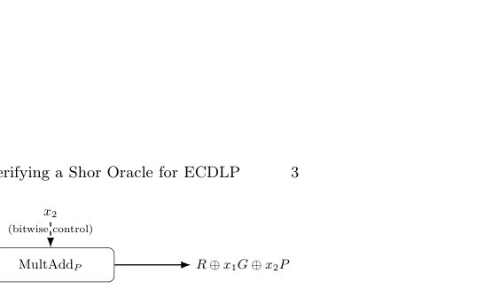
Summary. This paper proposes a method for verifying that quantum software implementations of ECDLP oracles correctly match their mathematical specifications. It demonstrates that even when individual components work correctly, the compilation process in frameworks like Qrisp can introduce errors in controlled operations. This highlights the need for semantic auditing in the development of trustworthy quantum algorithms.
Why it may be interesting. not directly relevant
Main problem. The discrepancy between abstract mathematical oracles for the Elliptic Curve Discrete Logarithm Problem (ECDLP) and their actual implementation in quantum programming frameworks like Qrisp, which can lead to invalid algorithmic conclusions.
Main result. The paper establishes a semantics-first verification framework and identifies a specific case where a compiled controlled-gate implementation fails to satisfy the expected control law, despite passing standalone tests.
Method. The authors use a refinement-style verification approach, defining correctness obligations across multiple layers of implementation and using a well-formedness predicate to handle exceptional inputs.
Model / system. The study uses the Qrisp quantum programming framework to implement a Shor-style oracle for ECDLP over a prime field Fp, specifically utilizing Short Weierstrass curves.
Key observables. Circuit complexity metrics including qubit count, circuit depth, T-count, and CX-count, as well as the verification of the control law and point-update accuracy.
Important parameters / regimes. The field size parameter m = ceil(log2 p) and the specific small-scale instance parameters p=5, a=3, b=3.
Assumptions / limitations. The complexity analysis assumes that underlying modular arithmetic and inversion primitives compile to uniform polynomial-size reversible circuits.
Figures summary. Figure 1 illustrates the composition of the oracle, showing how the accumulator register is updated via sequential bitwise-controlled updates.
Paper structure. The paper introduces the semantic gap problem, proposes a refinement-based verification framework, provides a complexity argument for the oracle family, and concludes with a case study demonstrating a control-law violation.
Shor-style quantum algorithms for the elliptic-curve discrete logarithm problem (ECDLP) are highly sensitive to the exact semantics of their group-operation oracles. Consequently, minor implementation choices can invalidate the intended mathematical model and lead to misleading conclusions. This paper introduces a semantics-first verification perspective for an end-to-end, compilable ECDLP implementation built on Qrisp. We specify the implemented oracle at the level of program semantics, derive refinement-style verification obligations for its key components, and provide a high-level complexity argument for the resulting oracle family. A small case study highlights that (i) the core point-update primitive agrees with a classical reference on well-formed inputs, yet (ii) controlled execution may violate the expected control law under the evaluated toolchain, despite a passing trivial control sanity check. These results position semantic auditing as a practical prerequisite for trustworthy ECDLP-oriented quantum software.
Authors: Maniru Ibrahim
Type: theory · Category: disordered systems and neural networks · PDF: https://arxiv.org/pdf/2605.01383v1
Analysis basis: full PDF text, analyzed in chunks
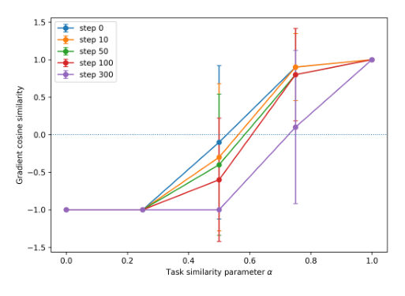
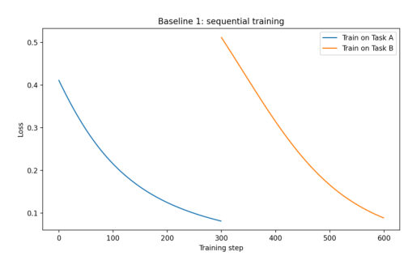
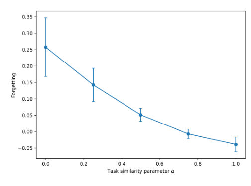
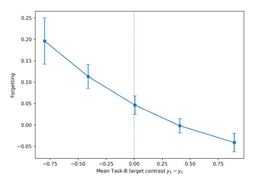
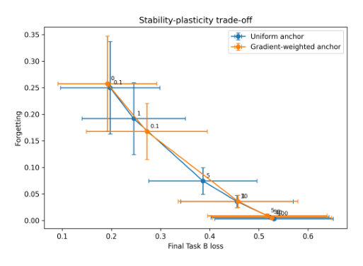
Summary. This paper studies how learning new tasks causes the erasure of previously learned behaviors in electrical resistor networks. It reveals that forgetting is a physical reconfiguration of the network's primary current pathways and demonstrates a fundamental trade-off between retaining old knowledge and adapting to new inputs.
Why it may be interesting. not directly relevant
Main problem. Investigating the mechanisms of catastrophic forgetting and the stability-plasticity trade-off in differentiable physical networks during sequential learning tasks.
Main result. Forgetting is identified as a localized reconfiguration of high-current transport pathways and is strongly driven by task conflict; regularization strategies like anchoring can reduce forgetting but at the cost of reduced adaptation to new tasks.
Method. Gradient-based optimization of edge conductances using automatic differentiation, combined with regularization techniques such as uniform and gradient-weighted anchoring.
Model / system. Differentiable resistor networks governed by Kirchhoff's laws, where edge conductances are trainable parameters in various graph topologies (Erdos-Renyi, small-world, scale-free, and random-geometric).
Key observables. Forgetting (loss increase on Task A), Task B loss (adaptation), gradient cosine similarity, task target contrast, and conductance update magnitudes.
Important parameters / regimes. Regularization strength (lambda), training budget (number of gradient steps), network size (N), and graph topology.
Assumptions / limitations. The network is assumed to reach physical equilibrium; conductances are constrained to be positive via softplus transformation; the study uses a minimal benchmark setup.
Figures summary. Figures visualize the forgetting-adaptation trade-off, the impact of shortest-path distance, and the localization of conductance updates on high-current edges.
Paper structure. The paper introduces the differentiable resistor network framework, defines the sequential learning protocol and regularization methods, presents results on task conflict and physical mechanisms of forgetting, analyzes the impact of network topology, and concludes with implications for tunable matter.
Differentiable physical networks provide a simple setting in which learning can be studied through the interaction between trainable parameters and physical equilibrium constraints. We investigate sequential learning in differentiable resistor networks governed by Kirchhoff's laws. Although individual input--output mappings can be learned by gradient-based adjustment of edge conductances, sequential training on conflicting tasks produces catastrophic forgetting. We show that forgetting is controlled by task conflict and by the degree of adaptation to the new task. Uniform anchoring and normalised gradient-weighted anchoring reduce forgetting only by increasing the final loss on the new task, giving a clear forgetting--adaptation trade-off. We also show that forgetting is associated with localised conductance changes on high-current edges, giving a physical interpretation as reconfiguration of dominant transport pathways. Broader random-task ensembles show that the strongest forgetting occurs when the second task reverses the output ordering imposed by the first task. Finally, comparisons across Erdős--Rényi, small-world, scale-free, and random-geometric graph ensembles show that topology changes the forgetting--adaptation balance. These results position differentiable resistor networks as compact, physically interpretable testbeds for studying continual learning in tunable matter.
Authors: Kyoung-Min Kim, Gibaik Sim, Moon Jip Park
Type: theory · Category: strongly correlated electrons · PDF: https://arxiv.org/pdf/2605.01686v1
Analysis basis: full PDF text, analyzed in chunks
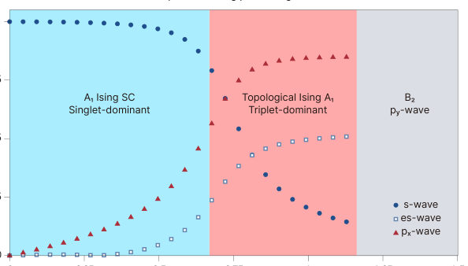
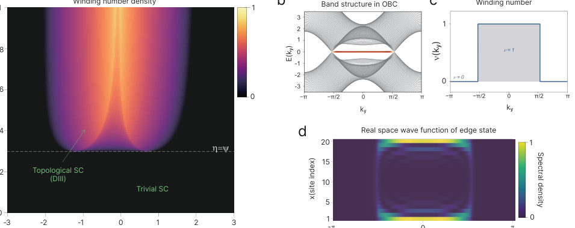
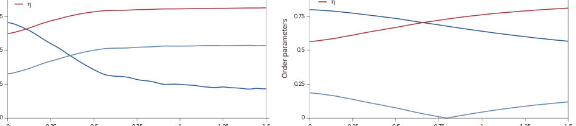
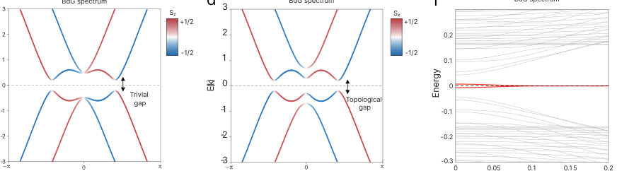
Summary. This paper demonstrates that 2D p-wave magnets can host topological superconductivity through an Ising-type s+p wave mixing mechanism. By tuning the ratio of interactions or applying an external magnetic field, one can realize robust Majorana edge modes without needing strong spin-orbit coupling.
Why it may be interesting. not directly relevant
Main problem. The study aims to find a platform for topological superconductivity that does not rely on weak, relativistic spin-orbit coupling, specifically investigating the emergence of Majorana modes in 2D p-wave magnets.
Main result. The researchers find that an odd-parity exchange field allows for a coupled s+p Ising superconducting state, which can transition into a nodal topological phase with Majorana edge modes when the triplet component dominates.
Method. The study uses a Bogoliubov-de Gennes (BdG) formulation, self-consistent linearized gap equations, and topological invariant calculations (winding numbers and Pfaffian invariants).
Model / system. A two-dimensional p-wave magnet on a square lattice described by an extended Hubbard model with on-site and nearest-neighbor attractive interactions and an odd-parity exchange field.
Key observables. Pairing amplitudes (singlet and triplet), superconducting phase diagrams, momentum-resolved winding numbers, and Majorana edge mode spectral density.
Important parameters / regimes. Exchange field strength (J), on-site attraction (U), nearest-neighbor attraction (V), chemical potential (mu), and transverse Zeeman field (hx).
Assumptions / limitations. The model assumes a square lattice with an effective two-band tight-binding structure derived from a larger four-band model via Schrieffer-Wolff transformation.
Figures summary. Figure 1a shows the pairing mechanism and d-vector orientation; Figure 1b illustrates the real-space lattice model; Figure 1c presents superconducting phase diagrams.
Paper structure. The paper introduces the physical problem of spin-orbit coupling-independent TSC, defines the p-wave magnetic model and Hamiltonian, derives the gap equations and symmetry classification, analyzes the topological phases and Majorana modes, and discusses the effects of external Zeeman fields.
Fermi-surface spin splitting generated by non-relativistic exchange fields provides a new route to topological superconductivity without relying on strong spin-orbit coupling. Here, we study superconducting instabilities of a square-lattice $p$-wave magnet with onsite and nearest-neighbour attractive interactions. The odd-parity exchange field removes inversion symmetry in the spin-split electronic structure, allowing singlet and triplet order parameters to mix within a single $A_1$ symmetry channel. The leading instability is a coupled $s+p_x$ Ising state, whose singlet-triplet balance is continuously tunable by the relative strength of the nearest-neighbour attraction. When the triplet gap amplitude exceeds the singlet one, this Ising state undergoes a transition into a nodal topological superconducting phase with Majorana edge modes protected by momentum-resolved winding numbers. These modes extend over finite momentum intervals bounded by the surface projections of bulk point nodes. We further show that a Zeeman field perpendicular to the exchange field can induce a $Z_2$ topological superconducting phase, even in the regime where a single gap dominates.
Authors: Anish Bhat, Ryo Ide, Zihan Zhao
Type: theory · Category: statistical mechanics · PDF: https://arxiv.org/pdf/2605.01145v1
Analysis basis: full PDF text, analyzed in chunks
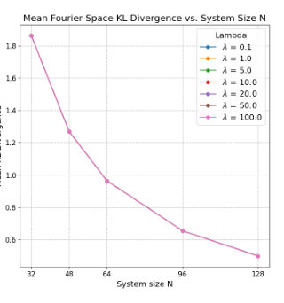
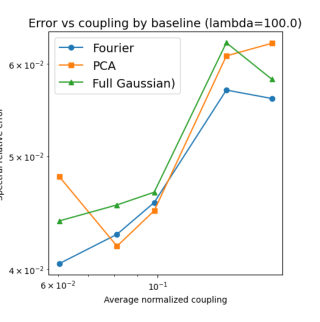
Summary. This paper demonstrates that the failure of Gaussian models in interacting field theories is primarily due to complex dependencies between modes rather than the non-Gaussian nature of individual modes. By identifying specific regimes of coupling, it provides a diagnostic tool to determine when more expressive, nonlinear models are necessary.
Why it may be interesting. not directly relevant
Main problem. The study investigates why Gaussian and independent Fourier-mode models fail to capture the complexity of self-interacting physical systems, specifically distinguishing between failures due to marginal non-Gaussianity versus structured inter-mode dependencies.
Main result. The authors find a separation between marginal simplicity and joint complexity: while individual Fourier modes become approximately Gaussian as system size increases, the inter-mode coupling grows, driving the failure of Gaussian models.
Method. The researchers used Metropolis-Hastings MCMC to sample the 1D phi-4 theory and employed various diagnostics including a 4th-order coupling metric, spectral error, and KL divergence to compare Gaussian baselines against the true distribution.
Model / system. A one-dimensional phi-4 theory on a lattice with periodic boundary conditions, defined by a Hamiltonian containing kinetic, mass, and quartic interaction terms.
Key observables. Two-point correlation function, power spectrum, normalized coupling metric (C), spectral error (epsilon), excess kurtosis, and Kullback-Leibler divergence.
Important parameters / regimes. Interaction strength (lambda), system size (N), and bare mass (m^2).
Assumptions / limitations. The study is restricted to 1D lattice systems with periodic boundary conditions and focuses on 4th-order statistics, potentially overlooking higher-order cumulants.
Figures summary. The notes suggest figures demonstrating the scaling of Fourier mode Gaussianity (decreasing kurtosis) alongside the simultaneous growth of the coupling metric (C) and spectral error.
Paper structure. The paper introduces the problem of modeling failures, describes the 1D phi-4 system and MCMC methodology, presents the diagnostic metrics, details the discovery of the separation between marginal and joint complexity, identifies three distinct coupling regimes, and concludes with implications for future nonlinear model design.
In practical physical systems, modeling assumptions of Gaussianity and basis independence break down due to self-interactions. We study a specific instance of one-dimensional $φ^4$ theory on a lattice, analyzing how the interaction strength and system size jointly affect the marginal and joint distributions of frequency-based representation of the field (i.e., Fourier modes). We find that models relying on Gaussian and independent Fourier modes fail primarily from structured dependencies rather than marginal non-Gaussianity, since individual modes become approximately Gaussian despite mode coupling growing with size. Based on this, we identify three distinct regimes that delineate where traditional methods remain effective and where more expressive models are needed. Our results provide a computationally simple diagnostic to establish when Gaussian models are insufficient, and establish a concrete design criterion that future nonlinear models must satisfy.
Papers from cond-mat.mtrl-sci, mes-hall, other, soft, supr-con. These archives are de-prioritized — they appear at the end regardless of relevance score.
Authors: J. Njala, Y. Yamamoto, R. Kaji, S. Adachi, H. Sasakura
Type: experiment · Category: quantum information and computing · PDF: https://arxiv.org/pdf/2605.01801v1
Analysis basis: full PDF text, analyzed in chunks
Topic relevance: 🔥 QC/QI experiment 4/5 · 🔥 quantum optics experiment 4/5 · quantum measurements 3/5 · spintronics-quantum-optics interface 2/5
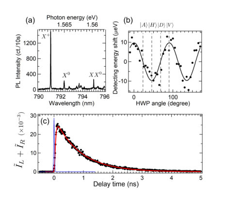
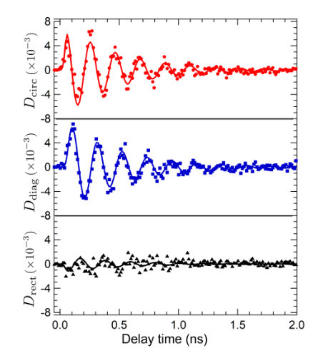
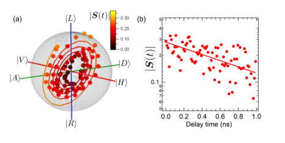
Summary. The study uses advanced tomography to map the 3D spin precession of an exciton in an InAlAs quantum dot. It reveals that spin coherence persists longer than the exciton lifetime itself, providing a robust platform for spin initialization and control in semiconductor nanostructures.
Why it may be interesting. This work is highly relevant to open quantum systems and quantum optics as it demonstrates high-fidelity 3D reconstruction of a single-qubit-like state (exciton spin) and provides a quantitative benchmark for decoupling intrinsic dephasing from recombination-induced decay.
Main problem. Achieving a complete, three-dimensional understanding of the spin trajectory of a neutral exciton in a single quantum dot and disentangling anisotropic exchange interaction from other relaxation processes.
Main result. The researchers demonstrated 3D quantum state tomography of exciton spin, revealing a long-lived spin coherence (1.1 ns) that exceeds the exciton lifetime and a spin trajectory that follows a spiral motion on the Bloch sphere.
Method. Time-resolved quantum state tomography using micro-photoluminescence in three orthogonal polarization bases (circular, diagonal, and rectilinear) combined with a global fitting procedure.
Model / system. A single InAlAs/AlGaAs quantum dot under two-LO-phonon quasi-resonant excitation, modeled by a Hamiltonian dominated by the anisotropic exchange interaction (AEI) and a Lindblad master equation.
Key observables. Fine-structure splitting (FSS), exciton lifetime, spin coherence time, initial degree of circular polarization, and the time-resolved spin vector magnitude.
Important parameters / regimes. Fine-structure splitting of ~19.6 ueV, exciton lifetime of ~767 ps, spin coherence time of 1.1 ns, and an instrument response function of ~30 ps.
Assumptions / limitations. The spin evolution is dominated by the anisotropic exchange interaction with negligible influence from the local nuclear environment (no Overhauser shift).
Figures summary. Fig 1 shows the micro-PL spectrum and FSS determination; Fig 2 displays differential polarization signals showing quantum beats; Fig 3 illustrates the 3D spiral spin trajectory and the decay of the spin vector magnitude.
Paper structure. The paper introduces the experimental setup and spectral characterization, presents the time-resolved polarization measurements in three bases, details the 3D tomographic reconstruction and Hamiltonian fitting, and concludes with the analysis of spin relaxation and coherence.
We investigate the coherent exciton spin dynamics in a single InAlAs/AlGaAs quantum dot using time-resolved quantum state tomography. Under two-LO-phonon quasi-resonant excitation of neutral exciton, we observe pronounced quantum beats in the circular and diagonal polarization components, reflecting the fine-structure splitting ($Δ\approx 19.6 \ μ\text{eV}$). By employing a global fitting procedure across three orthogonal polarization bases, we demonstrate that the spin evolution is consistently described by a unified Hamiltonian dominated by the anisotropic exchange interaction. While the initial degree of circular polarization is limited to $\approx 0.28$ due to fast relaxation processes during carrier cooling, the subsequent dynamics reveal a long-lived spin coherence ($1.1 \pm 0.2$ ns) that exceeds the exciton lifetime ($\sim 767$ ps). Our analysis reveals that the spin-formation time is significantly shorter than the instrument response function, and the absence of a discernible Overhauser shift confirms a negligible influence from the local nuclear environment under the present conditions. These results provide a quantitative benchmark for the three-dimensional reconstruction of spin trajectories using differential polarization signals, demonstrating the feasibility of using quasi-resonant excitation for stable spin initialization in semiconductor nanostructures.
Authors: Gaomin Tang, Yuhua Ren, Jian-Sheng Wang
Type: theory · Category: statistical mechanics · PDF: https://arxiv.org/pdf/2605.02265v1
Analysis basis: full PDF text, analyzed in chunks
Topic relevance: 🔥 Keldysh / 2PI / non-Gaussian methods 4/5 · methods for driven-dissipative 3/5 · correlated / nonlocal dissipation 2/5 · free-space correlated emission 2/5 · non-equilibrium dynamics 2/5
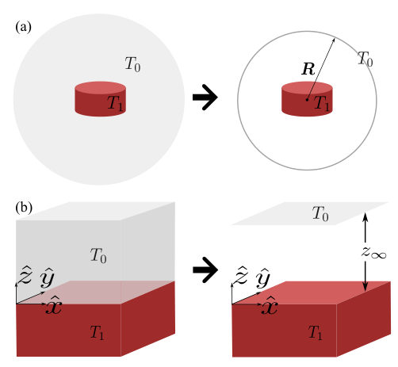
Summary. This paper simplifies the complex problem of calculating far-field thermal radiation by replacing an infinite volume of 'environmental dust' with a simple, local photonic bath at infinity. The authors derive analytical expressions for this bath in both 3D and 2D geometries, demonstrating that it correctly recovers black-body radiation properties. This new formalism provides a much more efficient way to perform both analytical and numerical calculations in radiative heat transfer.
Why it may be interesting. This work provides a powerful new computational framework for calculating far-field thermal radiation and Casimir forces, which is highly relevant for researchers working on open quantum systems and quantum optics in the presence of thermal environments.
Main problem. The difficulty of modeling far-field thermal radiation due to the computational complexity of integrating electromagnetic wave propagation over infinite space using the 'environmental dust' model.
Main result. The authors successfully map the distributed environmental dust to a simplified 'photonic bath at infinity' represented by a local self-energy, proving it behaves as a black body and providing analytical expressions for 3D and 2D systems.
Method. The study utilizes the nonequilibrium Green's function (NEGF) formalism, specifically the Keldysh Green's function, and employs a surface Green's function framework for verification.
Model / system. A material object (either a 3D body or a 2D planar system) at temperature T1 surrounded by an environment at temperature T0, modeled as a medium with infinitesimal absorption (dust).
Key observables. Radiative energy and momentum transfer, Casimir force, far-field heat, momentum, and angular-momentum radiation, and energy density.
Important parameters / regimes. Temperatures T1 and T0, frequency omega, infinitesimal absorption parameter eta, and the vacuum permittivity and permeability.
Assumptions / limitations. The model assumes infinitesimal absorption (eta to 0+), time-translational invariance, and a linear-response regime.
Figures summary. Figure 1 provides a schematic comparison between the traditional distributed dust model and the proposed effective photonic bath at infinity model for both 3D and 2D systems; Figure 2 shows a discretized lattice model used for the surface Green's function derivation.
Paper structure. The paper begins by defining the problem of far-field radiation modeling, introduces the mapping of dust to a photonic bath using NEGF, derives the effective self-energy and black-body behavior for 3D and 2D systems, and concludes with an alternative derivation using a surface Green's function framework and lattice renormalization.
In far-field thermal radiation, electromagnetic waves emitted by an object propagate to infinity, requiring the far region to be modeled as an effective thermal bath. This bath was proposed as infinitesimal environmental "dust", but explicit calculations with such distributed dust involve integrals over infinite space that are difficult to evaluate. In this work, we map this environmental dust to a photonic bath at infinity within the nonequilibrium photonic Green's function formalism. By explicitly evaluating the spatial integral over the dust, we show that its contribution reduces to a simple local self-energy, for which we derive analytical expressions for both three-dimensional objects and planar systems. We further demonstrate that the bath behaves as a black body and clarify its role in far-field thermal radiation. An alternative derivation based on the surface Green's function framework is also provided in Appendix B, demonstrating the theoretical consistency of the results without invoking the dust model. The photonic bath at infinity provides a convenient framework for both analytical and numerical calculations in far-field thermal radiation.
Authors: Christine M. E. Little, Daniel S. Kosov
Type: theory · Category: statistical mechanics · PDF: https://arxiv.org/pdf/2605.02315v1
Analysis basis: full PDF text, analyzed in chunks
Topic relevance: 🔥 Keldysh / 2PI / non-Gaussian methods 4/5 · correlated / nonlocal dissipation 3/5 · non-equilibrium dynamics 3/5 · methods for driven-dissipative 2/5
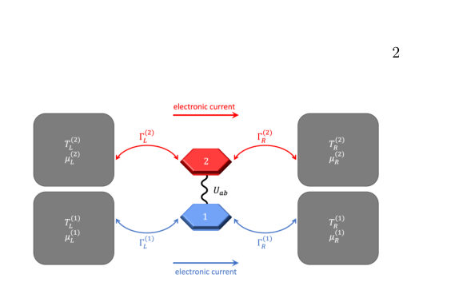
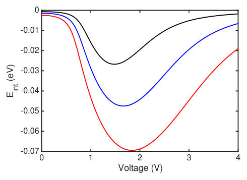
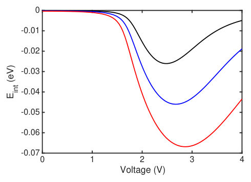

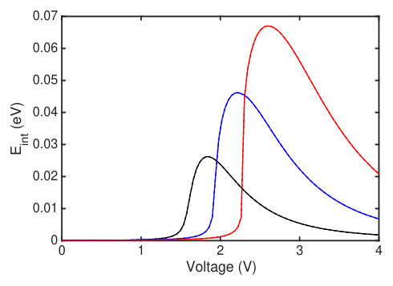
Summary. This paper develops a theoretical framework to study how electrical bias affects the van der Waals-like forces between nanostructures. It reveals that applied voltage can significantly strengthen attractive forces or even turn them repulsive through population inversion. This offers a mechanism for active, voltage-controlled control of nanoscale forces and self-assembly.
Why it may be interesting. It provides a fundamental generalization of the London picture to nonequilibrium settings, showing how breaking detailed balance via voltage can fundamentally change the nature of long-range forces.
Main problem. Developing a theory for dispersion (van der Waals) interactions between two nanostructures driven into a nonequilibrium steady state by an applied bias voltage, and determining how voltage can tune the magnitude and sign of these forces.
Main result. The authors derive a general expression for the interaction energy as a coupling between charge noise and charge dissipation, demonstrating that voltage can enhance attraction by an order of magnitude and that population inversion can induce a repulsive interaction.
Method. Nonequilibrium Green's function (NEGF) theory on the Keldysh contour using the second-order Born approximation.
Model / system. Two capacitively coupled quantum nanostructures (e.g., molecular junctions) each connected to independent electron reservoirs, interacting via a density-density Coulomb coupling without direct tunneling.
Key observables. Interaction energy (E_int), charge noise spectrum (S), dissipative charge response (chi), and the generalized KMS ratio (Z).
Important parameters / regimes. Applied bias voltage (V), electronic temperature (T), hybridization width (Gamma), and population inversion.
Assumptions / limitations. The Green's function is assumed to be block-diagonal (no inter-system tunneling), and the second Born approximation is used for the inter-system interaction.
Figures summary. Figure 1 shows a schematic of the coupled nanostructures and reservoirs; Figure 2 shows interaction energy as a function of voltage showing enhancement; Figure 3 shows the shift in the voltage-induced minimum with different orbital energies; Figure 4 shows the transition to a repulsive regime under population inversion.
Paper structure. The paper introduces the problem of nonequilibrium dispersion, develops the NEGF theoretical framework, provides a fluctuation-dissipation interpretation, presents model calculations for molecular junctions showing voltage-tunable attraction and repulsion, and discusses experimental implications.
We develop a nonequilibrium Green's function theory for dispersion interactions between two nanostructures, each an open quantum system driven into a nonequilibrium steady state by an applied bias voltage. Starting from the two-particle nonequilibrium Green's function, we derive a general expression for the interaction energy in terms of the polarisation propagators of the individual systems. The interaction energy admits a physically transparent decomposition into charge noise and charge dissipation contributions, providing a fluctuation-dissipation interpretation that generalises the equilibrium London picture. Model calculations for coupled molecular junctions demonstrate that the applied voltage can enhance the attractive dispersion interaction by nearly an order of magnitude relative to equilibrium. In thermal equilibrium, the dispersion interaction is universally attractive, irrespective of the specific form of the nanostructure Hamiltonians or their coupling to reservoirs. Out of equilibrium, we introduce a generalised Kubo-Martin-Schwinger ratio that parametrises the departure from detailed balance. We show that, in contrast to equilibrium, nonequilibrium conditions can lead to a repulsive dispersion interaction. Finally, we discuss the conditions under which population inversion in the electronic leads can drive a sign reversal of the dispersion interaction.
Authors: Sai Abhishikth Dhurjati, Moritz Langer, Yared G. Zena, Ahmad Rahimi, Liesa Raith, Martin Bauer, Frank H. P. Fitzek, Riccardo Bassoli, Caspar Hopfmann
Type: both · Category: quantum information and computing · PDF: https://arxiv.org/pdf/2605.02360v1
Analysis basis: full PDF text, analyzed in chunks
Topic relevance: 🔥 QC/QI experiment 4/5 · 🔥 quantum optics experiment 4/5 · interference shaping light 2/5
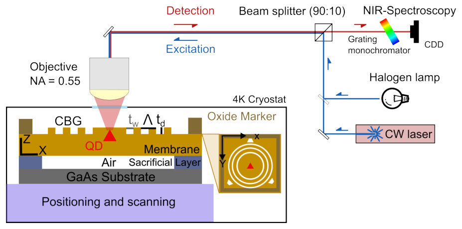
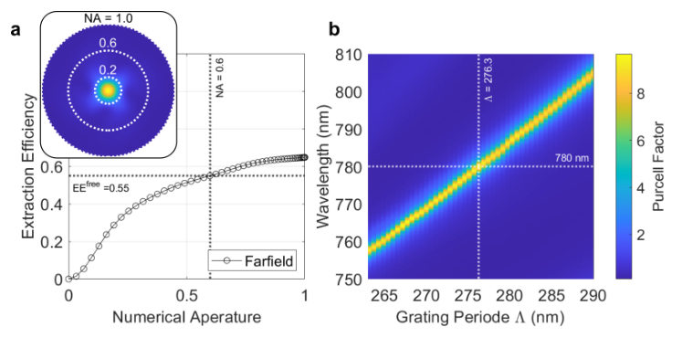
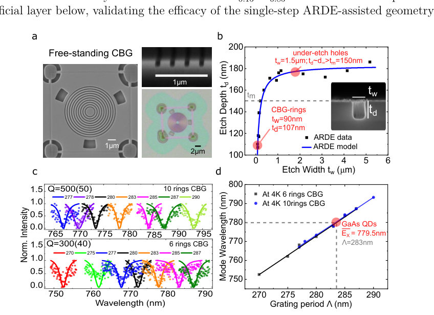
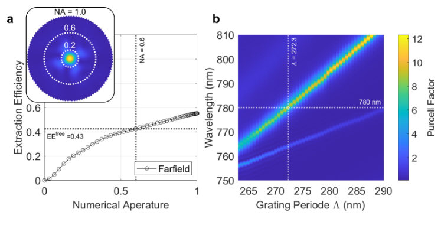
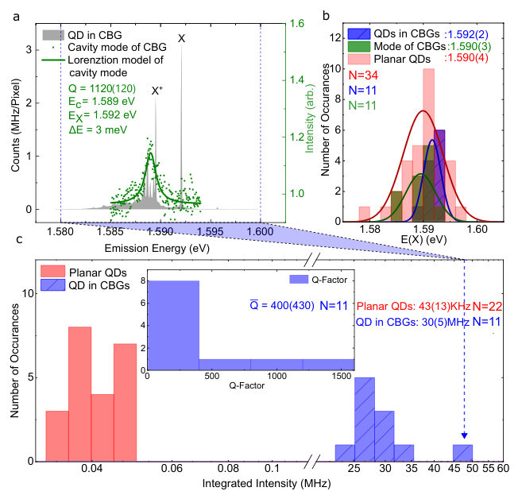
Summary. The researchers created a new type of semiconductor light source using free-standing circular gratings that are much easier to manufacture than previous versions. This method significantly boosts the brightness of quantum dot photon emission and reduces unwanted energy splitting, making it a promising platform for scalable quantum communication networks.
Why it may be interesting. This work is highly relevant to quantum optics and quantum networks as it demonstrates a scalable way to generate high-brightness, high-fidelity entangled photon sources by engineering the local density of states and relaxing mechanical strain.
Main problem. The need for a scalable, fabrication-simple, and strain-free platform for efficient extraction of entangled photon pairs from GaAs quantum dots, avoiding the complexity and degradation caused by conventional multi-layer architectures.
Main result. The development of a monolithic, free-standing circular Bragg grating (CBG) that achieves a 700-fold increase in photoluminescence intensity, reduces fine-structure splitting from 7.3 to 1.3 ueV, and reaches integrated count rates of 45 MHz.
Method. A single-step top-down fabrication process using aspect-ratio-dependent etching (ARDE) for vertical asymmetry, combined with FDTD simulations for design optimization and AFM-based lithography for deterministic QD alignment.
Model / system. Free-standing GaAs/AlGaAs circular Bragg grating cavities embedded with deterministically positioned GaAs quantum dots within suspended membranes.
Key observables. Photoluminescence intensity enhancement, extraction efficiency, fine-structure splitting (FSS), coherence time (T2), Purcell factor, and integrated count rates.
Important parameters / regimes. Cavity Q-factor (target <= 300), membrane thickness (150 nm), grating period, and fiber numerical aperture (NA = 0.6).
Assumptions / limitations. The use of an ARDE model to predict trench depth based on width and the assumption that the 150 nm membrane thickness is a practical approximation of the ideal 134 nm design.
Figures summary. Schematic of the experimental setup; comparison of simulated vs. fabricated structural parameters; optical performance plots (extraction efficiency and Purcell factor); micro-photoluminescence spectra and statistical distributions of FSS, Stokes parameters, and coherence times.
Paper structure. Introduction of the problem (extraction efficiency and strain); description of the fabrication-minimal CBG architecture and ARDE process; FDTD design optimization; experimental results including intensity enhancement, strain reduction (FSS), and coherence preservation; and a comparison of performance against existing platforms.
Deterministic and bright quantum light sources based on scalable semiconductor technologies are a crucial building block for future quantum communication networks. While circular Bragg gratings (CBGs) are highly effective for extracting light from solid-state quantum emitters, conventional architectures rely on complex multi-layer processing or flip-chip bonding, which introduce detrimental strain and limit scalability. Here, we present a fabrication-minimal approach to realize monolithic, free-standing CBG cavities with deterministically positioned single GaAs quantum dots (QDs). By utilizing aspect-ratio-dependent etching (ARDE) in a single-step top-down process, we achieve the necessary vertical structural asymmetry for directional emission without requiring bottom reflectors. Finite-difference time-domain (FDTD) simulations validate this geometry, predicting free-space extraction efficiencies up to $68 \, \%$ and coupling efficiencies of $40 \, \%$ into a lensed single-mode fiber ($\text{NA} = 0.6$). Experimentally, the deterministically coupled QD-CBG devices yield a photoluminescence intensity enhancement of up to $\times 700$ compared to unprocessed planar QDs, reaching integrated count rates of $45 \, MHz$. Furthermore, the suspended membrane architecture effectively relaxes residual strain, significantly reducing the average exciton fine-structure splitting from $7.3 \, μeV$ in planar QDs to $1.3 \, μeV$ in the CBGs. Interferometric measurements confirm that the fabrication process preserves the optical quality of the emitters, with average coherence times of $70 \, ps$. By bridging optimized FDTD design with precise nanofabrication and robust optical performance, these results establish free-standing GaAs CBGs as a highly scalable platform for bright and coherent entangled photon pair sources.
Authors: Régis Mélin, Romain Danneau, Morteza Kayyalha
Type: theory · Category: other · PDF: https://arxiv.org/pdf/2605.02642v1
Analysis basis: full PDF text, analyzed in chunks
Topic relevance: 🔥 Keldysh / 2PI / non-Gaussian methods 4/5 · non-equilibrium dynamics 3/5 · methods for driven-dissipative 2/5
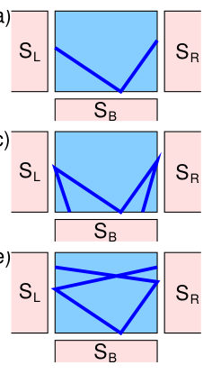
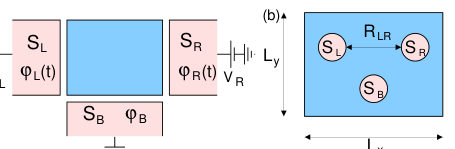
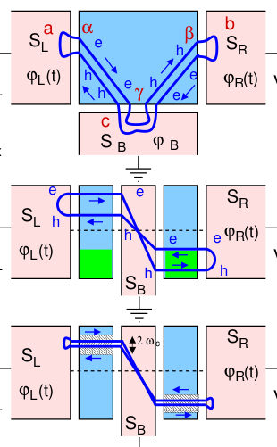
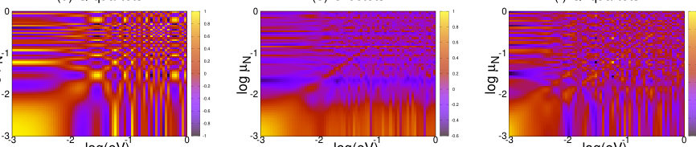
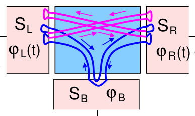
Summary. This paper explores how time-periodic driving in multi-terminal Josephson junctions leads to new types of Andreev reflection resonances. It provides a microscopic framework to predict conductance and noise signatures for complex multi-particle transfer processes. The study offers a pathway for engineering and probing Floquet states in superconducting hybrid structures.
Why it may be interesting. not directly relevant
Main problem. Investigating the emergence of Floquet-Multiple Andreev Reflection (Floquet-MAR) resonances in the transport properties of multi-terminal Josephson junctions.
Main result. The authors identify that higher-order multipair processes (like quartets and octets) create characteristic conductance and noise resonances, and they prove that the Fano factor for an N-order process scales as 2N.
Method. Keldysh Green's function formalism and a diagrammatic expansion using 'snake diagrams' to describe Andreev-tube trajectories.
Model / system. A three-terminal Josephson junction consisting of a ballistic 2D normal conductor connected to three superconducting leads, driven by voltage-induced periodic phase evolution.
Key observables. Finite-bias conductance, quantum noise cross-correlations, current susceptibility, and the Fano factor.
Important parameters / regimes. Bias voltages (VL, VR), electrochemical potential (mu_N), superconducting phases, and the Thouless energy.
Assumptions / limitations. Large-gap approximation, zero-temperature limit, large-system/ballistic limit, and lowest-order perturbation theory in tunneling amplitudes.
Figures summary. Figure 1 shows schematic setups and diagrams for quartet and octet transport processes; Figure 2 and 3 use toy models to illustrate the emergence and suppression of resonances at zero bias.
Paper structure. The paper introduces the Floquet-MAR concept, describes the 3-terminal junction model, develops the Keldysh-based microscopic transport theory, analyzes specific higher-order processes (quartets/octets), and concludes with a mathematical derivation of the Fano factor scaling.
Floquet theory describes quantum systems governed by time-periodic Hamiltonians, much as Bloch theory describes spatially periodic solids. In voltage-biased multiterminal Josephson junctions, the Josephson relation causes superconducting phase differences to evolve periodically in time, thereby providing an intrinsic Floquet drive. In this Letter, we consider three-terminal Josephson junctions formed on a ballistic two-dimensional normal conductor with a continuum of electronic states. We show that the quartet and higher-order multipair processes yield characteristic Floquet-multiple Andreev reflection (Floquet-MAR) finite-bias conductance and noise resonances that are parameterized by the bias voltage and electrochemical potential. This microscopic picture opens a route toward implementing and probing Floquet-MAR physics in ballistic multiterminal Josephson junctions.
Authors: Karol Kawa
Type: theory · Category: quantum information and computing · PDF: https://arxiv.org/pdf/2605.02785v1
Analysis basis: full PDF text, analyzed in chunks
Topic relevance: 🔥 quantum measurements 4/5 · methods for driven-dissipative 2/5 · non-equilibrium dynamics 2/5
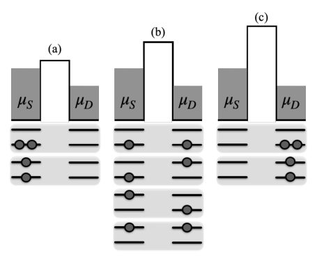
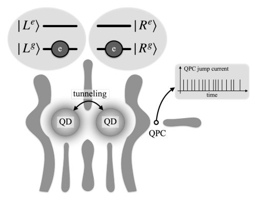
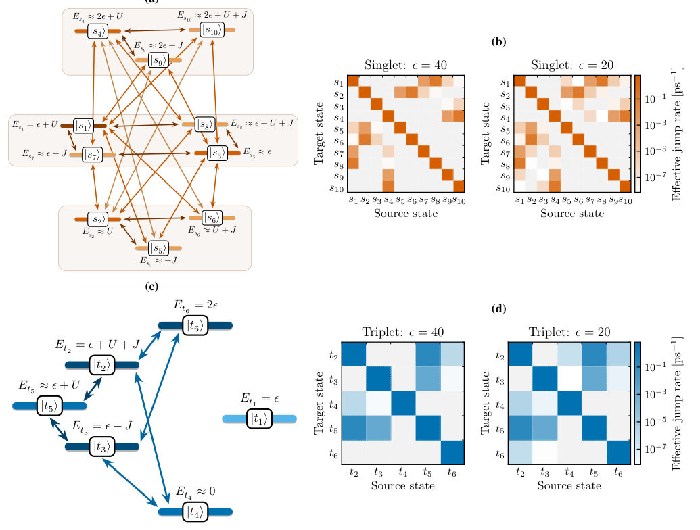
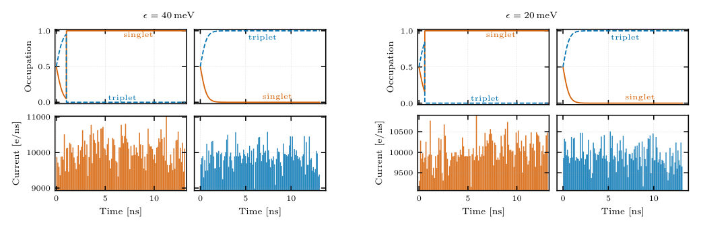
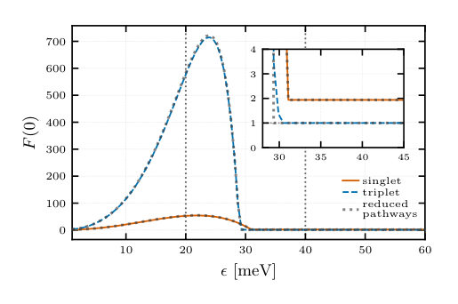
Summary. This paper explores how excited states in a double quantum dot cause leakage during spin-qubit readout. It demonstrates that these additional pathways can create significant low-frequency noise, potentially reversing the expected noise hierarchy between singlet and triplet states. This is crucial for designing high-fidelity readout protocols in semiconductor quantum computing.
Why it may be interesting. It provides deep insights into the dynamics of open quantum systems, specifically how detector-induced backaction and higher-energy manifolds influence the noise statistics and fidelity of continuous quantum measurements.
Main problem. Investigating how the presence of excited energy levels in a double quantum dot leads to triplet-assisted leakage during singlet-triplet qubit readout.
Main result. The study identifies that excited-level tunneling creates new leakage pathways that can significantly enhance low-frequency noise, potentially causing the triplet branch to become noisier than the singlet branch.
Method. The author uses a Lindblad master equation approach, quantum-jump simulations, and Liouvillian steady-state analysis combined with the quantum regression theorem.
Model / system. A lateral double quantum dot (DQD) with two single-particle levels per dot, capacitively coupled to a Quantum Point Contact (QPC) charge sensor, modeled via a Hamiltonian including interdot tunneling and on-site Coulomb repulsion.
Key observables. QPC current, current-noise power spectrum, Fano factor, and current contrast.
Important parameters / regimes. Level spacing (epsilon), QPC bias voltage, tunneling amplitude (t), and on-site charging energy (U).
Assumptions / limitations. Interdot Coulomb repulsion is neglected, spin is treated as a passive degree of freedom, and tunneling amplitudes are simplified to a single value.
Figures summary. Fig 1 shows the DQD-QPC schematic; Fig 2 illustrates charge configurations and barrier modulation; Fig 3 details the transition schemes and jump-rate matrices; Fig 4 shows quantum-jump trajectories; Fig 5 compares Fano spectra and relaxation times; Fig 6 plots the zero-frequency Fano factor versus level spacing.
Paper structure. The paper begins with the physical system and Hamiltonian decomposition, moves to the derivation of the master equation and jump operators, presents noise analysis via the quantum regression theorem, and concludes with numerical simulations and pathway analysis to identify the origins of leakage noise.
Quantum point contact readout theory for singlet-triplet qubits in a lateral double quantum dot is extended by including tunneling of triplet configurations into a higher-energy level of the neighboring dot. This additional channel creates energetically allowed leakage pathways that modify the branch-dependent charge and current-noise signatures, even when the Pauli blockade remains effective within the ground-state manifold. The model contains two single-particle levels in each dot. The resulting singlet and triplet block structure is derived together with a Lindblad master equation. Quantum-jump simulations are then used to resolve the dynamics of individual readout events. A complementary Liouvillian steady-state analysis identifies the regime in which tunneling to the excited level qualitatively changes the readout signatures, with the crossover determined by the level spacing.
Authors: Aldo Tarascio, Oliver Wicki, Dominik M. Zumbühl
Type: experiment · Category: quantum information and computing · PDF: https://arxiv.org/pdf/2605.02722v1
Analysis basis: full PDF text, analyzed in chunks
Topic relevance: 🔥 QC/QI experiment 4/5 · quantum optics experiment 2/5
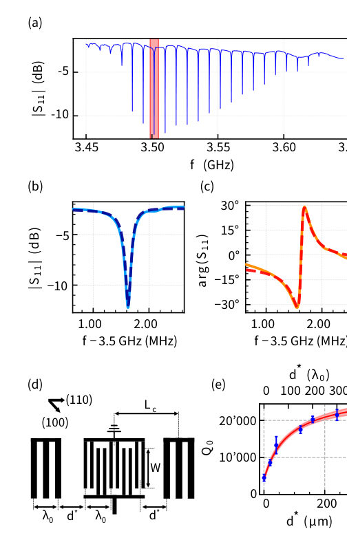
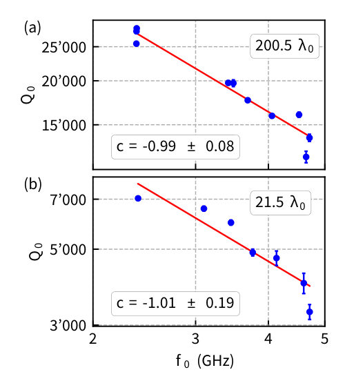
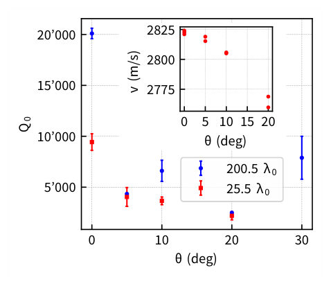
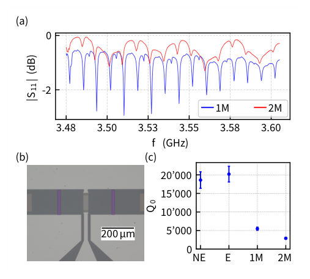
Summary. This paper demonstrates high-quality GaAs-based surface acoustic wave resonators operating in the GHz range at cryogenic temperatures. By optimizing geometry and material orientation, the authors achieve high quality factors, establishing GaAs as a robust platform for phonon-mediated hybrid quantum devices.
Why it may be interesting. This work is highly relevant for quantum acoustics and hybrid quantum systems, as it provides a scalable platform for coupling phonons to other quantum degrees of freedom (like quantum dots) at high frequencies and low temperatures.
Main problem. Achieving and characterizing high-quality (high-Q) surface acoustic wave (SAW) resonators at gigahertz frequencies and cryogenic temperatures using a Gallium Arsenide (GaAs) platform.
Main result. The researchers achieved quality factors up to 28,000 in the GHz range and demonstrated that GaAs-based SAW resonators are a viable, scalable platform for quantum acoustics with much weaker frequency-dependent loss than quartz.
Method. Systematic experimental study using reflection spectroscopy via a Vector Network Analyzer to measure resonance frequency, Q-factor, and reflectivity across varying cavity lengths, wavelengths, and crystal orientations.
Model / system. The physical system consists of GaAs-based SAW resonators acting as acoustic Fabry-Perot cavities, featuring interdigitated transducers (IDTs) and distributed Bragg reflectors (DBRs). The analysis uses a complex resonator model and a weak-reflection limit approximation for the DBRs.
Key observables. Internal quality factor (Q0), external quality factor (Qext), resonance frequency (f0), SAW velocity (v), single-finger reflectivity (|rs|), and attenuation coefficient (alpha_p).
Important parameters / regimes. Frequency range of 2.4-4-8 GHz, phonon mean free path of ~7 mm, and cavity lengths ranging from small to 200.5 lambda_0.
Assumptions / limitations. The DBR is modeled using a weak periodic reflector approximation; the resonator is simplified to a series RLC circuit near resonance; and the system is measured in a non-vacuum environment (liquid helium).
Figures summary. Fig 1a shows reflection spectra with multiple modes; Fig 2 shows Q0 vs frequency with power-law fits; Fig 3 shows Q0 vs crystal rotation angle; Fig 4 compares reflection spectra and Q0 for different etched mesa configurations.
Paper structure. The paper introduces the challenge of GHz SAW resonators, describes the GaAs experimental platform and fabrication, presents systematic results on cavity size and frequency dependence, investigates the impact of crystal orientation and structural defects (mesas), and concludes with design guidelines for quantum acoustic applications.
Surface acoustic wave (SAW) resonators provide a compact platform for confining microwave-frequency phonons and are widely used in radio-frequency technologies, but their operation at gigahertz frequencies and cryogenic temperatures remains challenging. In this regime, conventional design rules do not directly apply, and achieving high-quality acoustic confinement requires careful consideration about geometry and loss mechanisms. Here, we present a systematic experimental study of SAW resonators on gallium arsenide, a platform of particular interest for hybrid quantum devices but comparatively unexplored for high-Q SAW cavities. By varying key design parameters such as cavity length, wavelength, and crystal orientation, we study resonator performance and achieve quality factors up to 28000 in the gigahertz range. In addition, we introduce mesa steps within the acoustic cavity, mimicking realistic device architectures and providing insight into scattering processes and additional dissipation channels. Our results establish practical design guidelines for GaAs-based SAW resonators and support their development as a scalable platform for quantum acoustics and phonon-mediated hybrid systems.
Authors: Fco. Javier Anaya Garcia, Daniel Salgado-Blanco, Gabriel Gonzalez
Type: theory · Category: other · PDF: https://arxiv.org/pdf/2605.01119v1
Analysis basis: full PDF text, analyzed in chunks
Topic relevance: non-equilibrium dynamics 3/5 · Kondo & dissipative impurity 2/5 · correlated / nonlocal dissipation 2/5 · methods for driven-dissipative 2/5
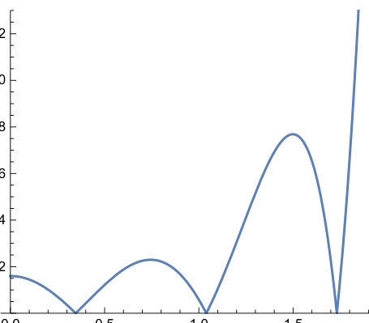
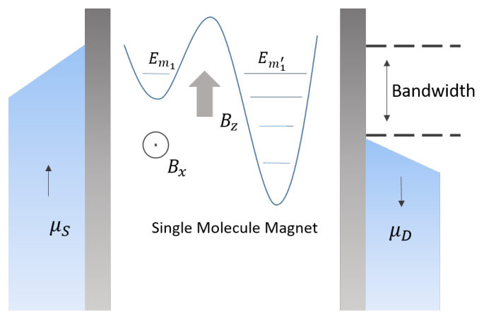
Summary. This paper provides an analytical and numerical study of how Berry-phase interference can be used to manipulate and even block electronic current in single molecule magnet transistors. By using an effective Hamiltonian and the QmeQ software, the authors show that specific magnetic field configurations create destructive interference that suppresses tunneling. This work highlights the potential for using magnetic fields to control quantum transport in molecular-scale devices.
Why it may be interesting. The paper explores the control of quantum transport via geometric phases (Berry phase) and the emergence of dark states in open quantum systems, which is highly relevant to the study of dissipation and quantum interference in molecular electronics.
Main problem. Investigating the transport signatures of Berry-phase interference in a single molecule magnet (SMM) transistor, specifically how transverse and longitudinal magnetic fields affect current flow through oppositely polarized leads.
Main result. The study demonstrates that Berry-phase interference can lead to 'dark states' where the energy splitting vanishes, completely blocking the stationary current. It also shows that increasing the SMM spin increases the number of interference points and decreases current intensity.
Method. A density matrix approach using perturbation theory to derive an effective two-level Hamiltonian, combined with a Lindblad master equation in the Born-Markov and infinite-bias approximations, validated by numerical simulations using the QmeQ Python package.
Model / system. A single molecule magnet (SMM) transistor in the strong Coulomb blockade regime, tunnel-coupled to leads with opposite spin polarization. The Hamiltonian includes uniaxial and in-plane transverse anisotropy, longitudinal and transverse magnetic fields, and exchange interactions.
Key observables. Stationary average current , energy splitting (delta E), and tunneling transition rate (Gamma).
Important parameters / regimes. Spin value (s), anisotropy constants (Kz, K), magnetic fields (Bz, Bx), tunneling rate (Gamma), and Coulomb interaction strength (U).
Assumptions / limitations. The system is in the Coulomb blockade regime; the transverse field and anisotropy are small compared to longitudinal components; the analytical model neglects temperature, lead bandwidth, and certain Coulomb effects.
Figures summary. Figure 1 shows energy splitting vs. transverse field for s=3; Figure 2 provides a schematic of the SMM transistor setup; Figure 3 shows current suppression for various spin values; Figure 4 compares analytical predictions with QmeQ numerical results.
Paper structure. The paper introduces the physical problem of SMM transport, defines the Hamiltonian and effective two-level model, derives analytical results for energy splitting and current using a density matrix approach, validates these results with numerical simulations in QmeQ, and discusses the dependence of results on spin and magnetic fields.
In this paper we theoretically and numerically investigate transport signatures of quantum interference on the current through a single molecule magnet transistor tunnel coupled to oppositely polarized leads in the presence of a local transverse and longitudinal magnetic field. Our calculations are based in a density matrix approach where we treat the ground state energy splitting induced by tunneling of the spin between different paths with the aid of perturbation theory. Using this approach we show that it is possible to use an effective Hamiltonian which describes the Berry phase interference as a function of the transverse magnetic field which completely blocks the current flow when we place the single molecule magnet between oppositely polarized leads. Finally, we use this effective Hamiltonian in an open source Python software (QmeQ) that allows us to calculate the current through the single molecule magnet with oppositely polarized leads tunnel coupled to the single molecule magnet. The analytical results are well reproduced by our numerical simulations.
Authors: Fengkai Wei, Xinru Ji, Tobias J. Kippenberg, Duk-Yong Choi, Carsten Ronning
Type: both · Category: other · PDF: https://arxiv.org/pdf/2605.02535v1
Analysis basis: full PDF text, analyzed in chunks
Topic relevance: quantum optics experiment 3/5 · QC/QI experiment 2/5 · interference shaping light 2/5

Summary. Researchers have achieved a significant boost in erbium-doped silicon nitride light emission at room temperature by using metasurfaces to create Mie resonances. By optimizing the size of nanocylinders and the depth of ion implantation, they achieved an 18-fold increase in brightness. This provides a way to integrate active light sources into standard silicon-based photonic chips.
Why it may be interesting. The paper demonstrates significant control over the Purcell effect and local density of optical states (LDOS) in a CMOS-compatible platform, which is highly relevant to the development of integrated quantum optical components and light-matter interfaces.
Main problem. Achieving efficient, room-temperature 1550 nm photoluminescence in silicon nitride (Si3N4) for active on-chip photonics, which is typically limited by low spontaneous emission and non-radiative recombination.
Main result. Demonstrated an 18-fold enhancement of Er3+ photoluminescence at room temperature using Mie-type resonances in Si3N4 nanocylinder metasurfaces, driven by the Purcell effect.
Method. The study combines ion implantation of Er3+ ions, thermal annealing, and electron beam lithography with FDTD and SRIM simulations to optimize the local density of optical states and ion distribution.
Model / system. The system consists of Er3+-doped Si3N4 metasurfaces made of periodic arrays of nanocylinders (height 365 nm, radius 240-465 nm) on a fused silica substrate.
Key observables. Photoluminescence (PL) intensity, luminescence lifetime, Purcell factor, and ion implantation depth/range.
Important parameters / regimes. Nanocylinder radius (optimal at 390 nm), implantation energy (50 to 350 keV), and wavelength (1530 nm/C-band).
Assumptions / limitations. The enhancement is primarily driven by the Purcell effect via Mie-type resonances; the system operates in a regime where thermal annealing effectively passivates defects.
Figures summary. The notes describe PL spectral heatmaps showing the relationship between nanocylinder radii and implantation energies, and a plot of peak PL intensity as a function of implantation energy and ion range.
Paper structure. The paper introduces the challenge of active Si3N4 photonics, describes the fabrication and doping process, presents electromagnetic simulations and ion distribution modeling, details the experimental PL and lifetime measurements, and discusses the optimization of ion depth and resonance geometry.
We report a significant enhancement of room-temperature photoluminescence from trivalent erbium-doped (Er3+) silicon nitride (Si3N4) metasurfaces at the telecommunication wavelength prepared via ion implantation. The metasurfaces, consisting of periodic nanocylinder arrays, are designed to support Mie-type resonances that tailor the local density of optical states. By systematically optimizing the nanocylinder radii, we achieve a photoluminescence (PL) enhancement factor of ~18 at a radius of 390 nm after thermal annealing, which is in excellent agreement with our simulations. Time-resolved PL measurements reveal a nearly ten-fold reduction in luminescence lifetime, confirming that the enhancement is primarily driven by the Purcell effect. Furthermore, we demonstrate that the PL intensity is strongly dependent on the Er3+ ion implantation depth, with a four-fold increase in emission observed from 20 nm to 80 nm ion range. These results provide a robust pathway for integrating efficient, active light sources into CMOS-compatible photonic device.
Authors: Ryoi Ohashi, Hiroki Isobe, Ryota Nakai, Kentaro Nomura
Type: theory · Category: strongly correlated electrons · PDF: https://arxiv.org/pdf/2605.01206v1
Analysis basis: full PDF text, analyzed in chunks
Topic relevance: entanglement & information structure 2/5 · non-equilibrium dynamics 2/5 · non-equilibrium universality 2/5
Summary. This paper develops a phase-shift instanton method to establish a duality between quasi-particle and electron tunneling in non-Abelian Read-Rezayi fractional quantum Hall states. It discovers that the strong-coupling regime exhibits a universal V^4 conductance scaling across different states due to fundamental topological constraints. This result implies that simple conductance measurements cannot distinguish between these complex non-Abelian states in the strong-coupling limit.
Why it may be interesting. The paper provides deep insights into the topological constraints of non-Abelian edge states and demonstrates how complex anyonic operators can recombine into a universal fermion, which is relevant to the study of many-body dynamics and topological order.
Main problem. Extending the concept of tunneling duality from Abelian and Moore-Read states to the more complex non-Abelian Read-Rezayi states, specifically addressing the difficulty of the intricate operator algebra.
Main result. The authors derive an explicit dual description for the k=3 Read-Rezayi state and reveal a universal transport signature where differential conductance scales as G proportional to V^4 in the strong-coupling regime.
Method. A new 'phase-shift instanton' approach is introduced to incorporate phase factors from non-Abelian primary fields into an instanton gas framework, combined with Renormalization Group (RG) analysis.
Model / system. The system consists of fractional quantum Hall (FQH) states (Laughlin, Moore-Read, and Read-Rezayi) in point-contact geometries, modeled using effective edge actions involving U(1) charge sectors and Z_k parafermion Conformal Field Theory (CFT).
Key observables. Non-linear differential conductance (G) and tunneling current (I) as a function of bias voltage (V).
Important parameters / regimes. Filling factors (nu = 1/3, 1/2, 3/5), tunneling amplitudes (QPT and ET), and scaling dimensions (Delta).
Assumptions / limitations. The method assumes the low-frequency limit where the frequency dependence of the Fourier coefficient can be neglected, and it relies on the instanton-gas approximation.
Figures summary. Figure 1 shows point-contact geometries and the concept of tunneling duality; Figure 3 illustrates the phase-shift instanton process for Moore-Read and Read-Rezayi states.
Paper structure. The paper introduces the problem of tunneling duality, presents the phase-shift instanton method, applies it to Moore-Read and Read-Rezayi states, performs RG analysis for conductance scaling, and provides mathematical derivations in the appendices.
We study the duality between quasi-particle and electron tunneling in point-contact geometries of fractional quantum Hall states. To treat non-Abelian edge operators, we introduce a "phase-shift instanton" that incorporates phase factors from primary fields into the instanton gas framework. Using this method, we reformulate the Moore--Read duality and obtain an explicit dual description for the $k=3$ Read-Rezayi state. Our results clarify how quasi-particle tunneling produces characteristic phase shifts in instantons and how these shifts map strong quasi-particle tunneling to weak electron tunneling. Based on this dual description, we analytically evaluate the non-linear differential conductance in the strong-coupling regime. We reveal that, due to the physical requirement that the tunneling particle across the vacuum gap must be a true fermion, the transport behavior universally converges to a $G \propto V^4$ scaling for both the Moore--Read and Read--Rezayi states. This universal transport signature highlights a fundamental topological constraint underlying non-Abelian fractional quantum Hall edges.
Authors: Xianxi Zhang, Hongyu Yu, Liangliang Hong, Hongjun Xiang
Type: theory · Category: strongly correlated electrons · PDF: https://arxiv.org/pdf/2605.01781v1
Analysis basis: full PDF text, analyzed in chunks
Topic relevance: non-equilibrium dynamics 2/5 · spintronics-quantum-optics interface 2/5
Summary. This paper introduces a new first-principles method to simulate the simultaneous motion of atoms and spins in magnetic materials without needing pre-fitted parameters. It successfully predicts complex magnetic phases and shows that the data generated by this method can significantly improve the accuracy of machine-learning models for magnetism.
Why it may be interesting. not directly relevant
Main problem. The lack of a unified, first-principles framework capable of propagating both spin and lattice degrees of freedom simultaneously without relying on empirical parameterization.
Main result. The development of a fully ab initio spin-lattice dynamics (SLD) framework in VASP that accurately recovers diverse magnetic ground states and provides highly efficient, physically correlated training data for machine-learning potentials.
Method. A self-consistent dynamical loop integrated into VASP using constrained-moment density functional theory to obtain interatomic forces and effective magnetic fields at each time step.
Model / system. A coupled spin-lattice dynamics model where the lattice follows Newtonian equations of motion and spins follow the stochastic Landau-Lifshitz-Gilbert equation, applied to magnetic materials such as CrI3, bcc Fe, Cd2Os2O7, MgCr2O4, and BiFeO3.
Key observables. Interatomic forces, effective magnetic fields, magnetic order parameters (e.g., AIAO order parameter), magnetization, and lattice parameters (c/a ratio).
Important parameters / regimes. Time step (up to 1 fs), gyromagnetic ratio, Gilbert damping parameter, and the global penalty strength for magnetic constraints.
Assumptions / limitations. The spin-adiabatic approximation (instantaneous adaptation of moment magnitudes) and the atomic-moment approximation (local magnetic moments are treated as discrete variables).
Figures summary. Figure 1 illustrates the dynamical loop of the SLD framework; Figure 3 benchmarks SpinGNN models using SLD-derived data against randomized-spin datasets across different training budgets and sampling strategies.
Paper structure. The paper identifies the gap in current dynamical modeling, presents the new self-consistent VASP implementation, validates the physics across diverse magnetic orders, and demonstrates the utility of the resulting data for machine learning.
Coupled spin-lattice dynamics (SLD) underlie a wide range of magnetic phenomena, yet a unified first-principles framework that propagates both degrees of freedom without empirical parameterization has remained elusive. We present a fully ab initio SLD approach integrated into VASP, in which interatomic forces and effective magnetic fields are obtained at each time step from self-consistent constrained-moment density-functional calculations. The method is validated on four materials spanning ferromagnetic, non-collinear, and geometrically frustrated orders, recovering the correct magnetic ground state in every case from random initial conditions. SLD trajectories also provide physically correlated training data for magnetic machine-learning potentials, as demonstrated for BiFeO$_3$ by a reduction of up to approximately one order of magnitude in energy MAE over training on randomized spin configurations. This framework opens a practical first-principles route to finite-temperature spin-lattice coupled phenomena in magnetic materials.
Authors: Justin Brutger, Xiao Shen
Type: theory · Category: statistical mechanics · PDF: https://arxiv.org/pdf/2605.01087v1
Analysis basis: full PDF text, analyzed in chunks
Topic relevance: methods for driven-dissipative 2/5 · non-equilibrium dynamics 2/5
Summary. This paper investigates whether the formation of metal filaments in memristors follows non-equilibrium thermodynamic principles. Using kinetic Monte Carlo simulations, the authors demonstrate that the system minimizes entropy production and energy dissipation during the filament growth process. This suggests that the steady-state morphology of such devices might be predictable using thermodynamic extremum principles.
Why it may be interesting. not directly relevant
Main problem. The study aims to identify the underlying physical principles governing the morphology and stability of metal filament formation in electrochemical metallization (ECM) memristors.
Main result. The researchers observe that the filament formation process follows non-equilibrium thermodynamic extremal principles, specifically the minimization of entropy production and energy dissipation rates.
Method. The study uses kinetic Monte Carlo (KMC) simulations combined with continuum modeling of electric potential and temperature via finite difference methods.
Model / system. The system is an electrochemical metallization (ECM) memristor where metal filaments form and break in a solid-state electrolyte through electrically driven ion migration.
Key observables. Entropy production rate (from Joule heating and heat conduction), energy dissipation rate, filament morphology, and device resistance.
Important parameters / regimes. Applied current (3223 A), boundary temperature (300 K), ionic charge number (z=1), and various activation energies for oxidation, reduction, and diffusion.
Assumptions / limitations. The electric current is assumed to be ohmic and quasi-stationary, thermoelectric effects are neglected, and a linear phenomenological approximation is used for entropy production.
Figures summary. Figure 1 shows the physical processes in the simulation; Figure 2 displays run-averaged entropy production and energy dissipation rates; Figure 3 shows average filament growth and morphology; Figure 4 illustrates stochastic fluctuations in a single simulation run; Figure 5 shows the evolution of filament width and distance over time.
Paper structure. The paper introduces the problem of filament morphology, describes the KMC and continuum modeling approach, presents results regarding the minimization of thermodynamic rates during formation, discusses the transition to a steady state, and concludes with the implications of extremal principles.
Electrochemical metallization (ECM) memristors have potential applications in future neuromorphic computing hardware. The set, reset, and variable-resistance features of these devices originate in the formation and breakup of metal filaments in a solid-state electrolyte. While the performance characteristics of these devices are widely investigated, the driving principles behind the morphology of the filament formation process remain unclear. In this study, we propose an approach motivated by the extremal principles found in non-equilibrium thermodynamics and observe an entropy production and energy dissipation rate minimization during the filament-forming process in kinetic Monte Carlo simulations.
← Index · ← Previous · Next →